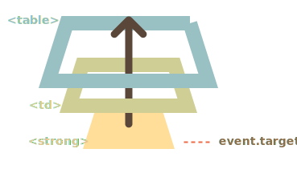

捕获和冒泡允许我们实现一种被称为 事件委托 的强大的事件处理模式。
这个想法是，如果我们有许多以类似方式处理的元素，那么就不必为每个元素分配一个处理程序 —— 而是将单个处理程序放在它们的共同祖先上。
在处理程序中，我们获得 event.target，查看事件实际发生的位置并进行处理。
让我们看一个示例 —— 反映中国古代哲学的 八卦图。
如下所示：
[iframe height=350 src="bagua" edit link]
其 HTML 如下所示：
<table>
<tr>
<th colspan="3">
<em>Bagua</em> Chart: Direction, Element, Color, Meaning
</th>
</tr>
<tr>
<td class="nw">
<strong>Northwest</strong><br />Metal<br />Silver<br />Elders
</td>
<td class="n">...</td>
<td class="ne">...</td>
</tr>
<tr>
...2 more lines of this kind...
</tr>
<tr>
...2 more lines of this kind...
</tr>
</table>该表格有 9 个单元格（cell），但可以有 99 个或 9999 个单元格，这都不重要。
我们的任务是在点击时高亮显示被点击的单元格 <td>。
与其为每个 <td>（可能有很多）分配一个 onclick 处理程序 —— 我们可以在 <table> 元素上设置一个“捕获所有”的处理程序。
它将使用 event.target 来获取点击的元素并高亮显示它。
代码如下：
let selectedTd;
table.onclick = function(event) {
let target = event.target; // 在哪里点击的？
if (target.tagName != 'TD') return; // 不在 TD 上？那么我们就不会在意
highlight(target); // 高亮显示它
};
function highlight(td) {
if (selectedTd) { // 移除现有的高亮显示，如果有的话
selectedTd.classList.remove('highlight');
}
selectedTd = td;
selectedTd.classList.add('highlight'); // 高亮显示新的 td
}此代码不会关心在表格中有多少个单元格。我们可以随时动态添加/移除 <td>，高亮显示仍然有效。
尽管如此，但还是存在缺陷。
点击可能不是发生在 <td> 上，而是发生在其内部。
在我们的例子中，如果我们看一下 HTML 内部，我们可以看到 <td> 内还有嵌套的标签，例如 <strong>：
<td>
<strong>Northwest</strong>
...
</td>自然地，如果在该 <strong> 上点击，那么它将成为 event.target 的值。

在处理程序 table.onclick 中，我们应该接受这样的 event.target，并确定该点击是否在 <td> 内。
下面是改进后的代码：
table.onclick = function (event) {
let td = event.target.closest("td"); // (1)
if (!td) return; // (2)
if (!table.contains(td)) return; // (3)
highlight(td); // (4)
};解释：
elem.closest(selector) 方法返回与 selector 匹配的最近的祖先。在我们的例子中，我们从源元素开始向上寻找 <td>。event.target 不在任何 <td> 中，那么调用将立即返回，因为这里没有什么事儿可做。event.target 可能是一个 <td>，但位于当前表格之外。因此我们需要检查它是否是 我们的表格中的 <td>。最终，我们得到了一个快速、高效的用于高亮显示的代码，该代码与表格中的 <td> 的数量无关。
事件委托还有其他用途。（译注：本节标题中的“标记中的行为”即 action in markup）
例如，我们想要编写一个有“保存”、“加载”和“搜索”等按钮的菜单。并且，这里有一个具有 save、load 和 search 等方法的对象。如何匹配它们？
第一个想法可能是为每个按钮分配一个单独的处理程序。但是有一个更优雅的解决方案。我们可以为整个菜单添加一个处理程序，并为具有方法调用的按钮添加 data-action 特性（attribute）：
<button data-action="save">Click to Save</button>处理程序读取特性（attribute）并执行该方法。工作示例如下：
<div id="menu">
<button data-action="save">Save</button>
<button data-action="load">Load</button>
<button data-action="search">Search</button>
</div>
<script>
class Menu {
constructor(elem) {
this._elem = elem;
elem.onclick = this.onClick.bind(this); // (*)
}
save() {
alert('saving');
}
load() {
alert('loading');
}
search() {
alert('searching');
}
onClick(event) {
let action = event.target.dataset.action;
if (action) {
this[action]();
}
};
}
new Menu(menu);
</script>请注意，this.onClick 在 (*) 行中被绑定到了 this。这很重要，因为否则内部的 this 将引用 DOM 元素（elem），而不是 Menu 对象，那样的话，this[action] 将不是我们所需要的。
那么，这里的委托给我们带来了什么好处？
+ 我们不需要编写代码来为每个按钮分配一个处理程序。只需要创建一个方法并将其放入标记（markup）中即可。
+ HTML 结构非常灵活，我们可以随时添加/移除按钮。我们也可以使用 .action-save，.action-load 类，但 data-action 特性（attribute）在语义上更好。我们也可以在 CSS 规则中使用它。
我们还可以使用事件委托将“行为（behavior）”以 声明方式 添加到具有特殊特性（attribute）和类的元素中。
行为模式分为两个部分：
例如，这里的特性 data-counter 给按钮添加了一个“点击增加”的行为。
Counter: <input type="button" value="1" data-counter /> One more counter:
<input type="button" value="2" data-counter />
<script>
document.addEventListener("click", function (event) {
if (event.target.dataset.counter != undefined) {
// 如果这个特性存在...
event.target.value++;
}
});
</script>如果我们点击按钮 —— 它的值就会增加。但不仅仅是按钮，一般的方法在这里也很重要。
我们可以根据需要使用 data-counter 特性，多少都可以。我们可以随时向 HTML 添加新的特性。使用事件委托，我们属于对 HTML 进行了“扩展”，添加了描述新行为的特性。
对于文档级的处理程序 —— 始终使用的是 addEventListener" 当我们将事件处理程序分配给 document对象时，我们应该始终使用addEventListener，
而不是 document.on<event>，因为后者会引起冲突：新的处理程序会覆盖旧的处理程序。
对于实际项目来说。在 document 上有许多由代码的不同部分设置的处理程序，这是很正常的。
再举一个例子。点击一个具有 data-toggle-id 特性的元素将显示/隐藏具有给定 id 的元素：
<button data-toggle-id="subscribe-mail">Show the subscription form</button>
<form id="subscribe-mail" hidden>Your mail: <input type="email" /></form>
<script>
document.addEventListener("click", function (event) {
let id = event.target.dataset.toggleId;
if (!id) return;
let elem = document.getElementById(id);
elem.hidden = !elem.hidden;
});
</script>让我们再次注意我们做了什么。现在，要向元素添加切换功能 —— 无需了解 JavaScript，只需要使用特性 data-toggle-id 即可。
这可能变得非常方便 —— 无需为每个这样的元素编写 JavaScript。只需要使用行为。文档级处理程序使其适用于页面的任意元素。
我们也可以组合单个元素上的多个行为。
“行为”模式可以替代 JavaScript 的小片段。
事件委托真的很酷！这是 DOM 事件最有用的模式之一。
它通常用于为许多相似的元素添加相同的处理，但不仅限于此。
算法：
event.target。好处：
+ 简化初始化并节省内存：无需添加许多处理程序。
+ 更少的代码：添加或移除元素时，无需添加/移除处理程序。
+ DOM 修改 ：我们可以使用 `innerHTML` 等，来批量添加/移除元素。事件委托也有其局限性：
- 首先，事件必须冒泡。而有些事件不会冒泡。此外，低级别的处理程序不应该使用 `event.stopPropagation()`。
- 其次，委托可能会增加 CPU 负载，因为容器级别的处理程序会对容器中任意位置的事件做出反应，而不管我们是否对该事件感兴趣。但是，通常负载可以忽略不计，所以我们不考虑它。